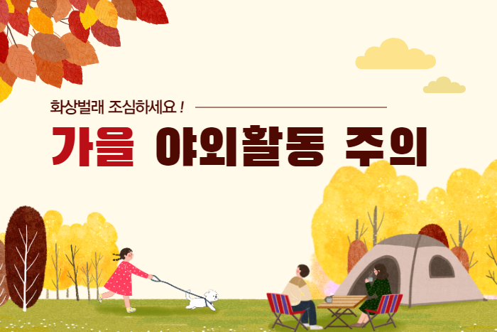
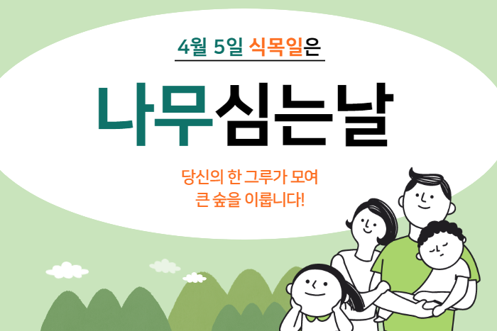

"그린뉴딜로 코로나 이후 시대를 열어갈 것"
조명래 환경부 장관은 9월 16일 화상회의로 열린 G20 환경장관회의에 우리나라
수석대표로 참석해 우리나라의 육상 및 해양 ......
"기후변화와 대기오염은 동전의 양면처럼 결합"
지난 2020년 9월 7일 제1회 푸른 하늘의 날을 맞아 문재인 대통령은 영상 기념사를 통해
기후환경 문제는 우리 세대의 가장 ......

화상벌레, 전북에 이어 경남·충남 가정집 출몰...접촉 주의
지난달 29일 전북 완주의 한 대학교 기숙사에서 화상벌레가 발견된 뒤 가정집에서도 벌레를 발견했다는 제보가 .....
환경부에서 개최하는 무료 에코강의
요즘 에코열풍이 대세다. 자연을 알고싶어 하는 시민들을 위해
무료로 강의를 준비하고 있다. 환경부는 자연은 소중하며, 자연을 아끼고 .....

대학생 봉사 단체인 ‘해바라기 봉사단’이 식목일을 맞아 노인복지관에서 공기 정화식물을 심는 봉사활동을 펼쳤다고 6일 밝혔다.
’해바라기 봉사단‘ 4기 1조는 지난 3일 서울 마장동에 .....
 "그린뉴딜로 코로나 이후 시대를 열어갈 것" 조명래 환경부 장관은 9월 16일 화상회의로 열린 G20 환경장관회의에 우리나라 수석대표로 참석해 우리나라의 육상 및 해양 ......"기후변화와 대기오염은 동전의 양면처럼 결합" 지난 2020년 9월 7일 제1회 푸른 하늘의 날을 맞아 문재인 대통령은 영상 기념사를 통해 기후환경 문제는 우리 세대의 가장 ......
"그린뉴딜로 코로나 이후 시대를 열어갈 것" 조명래 환경부 장관은 9월 16일 화상회의로 열린 G20 환경장관회의에 우리나라 수석대표로 참석해 우리나라의 육상 및 해양 ......"기후변화와 대기오염은 동전의 양면처럼 결합" 지난 2020년 9월 7일 제1회 푸른 하늘의 날을 맞아 문재인 대통령은 영상 기념사를 통해 기후환경 문제는 우리 세대의 가장 ......